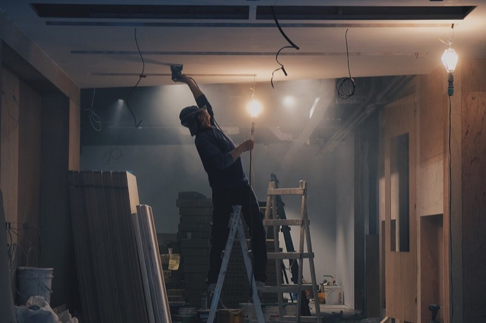
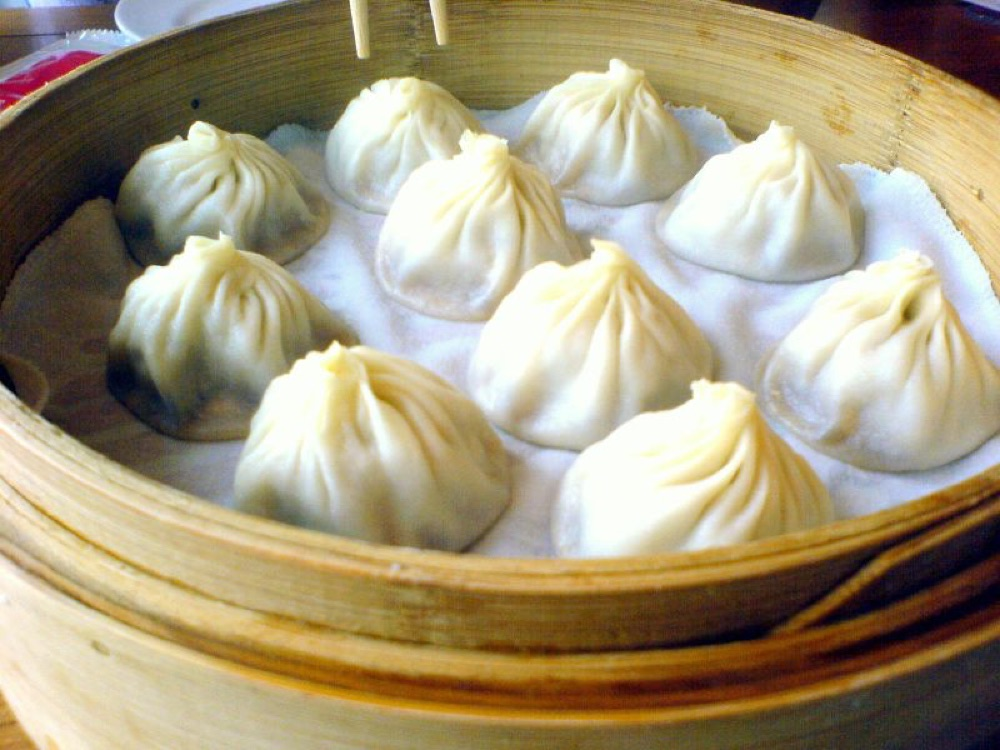

Family Trip · 5박 6일
대만 가족여행
타이베이 · 지우펀 · 베이터우 · 가오슝 · 타이난이모네 가족과 함께 8인
타이베이 · 지우펀 · 베이터우 · 가오슝 · 타이난이모네 가족과 함께 8인
좌우로 넘겨보세요. 6일 동안 들르는 주요 장소입니다.


체력 소모가 가장 큰 예류·스펀·지우펀 전세밴 투어를 컨디션이 제일 좋은 Day2에 두고, Day3을 베이터우 온천으로 잡아 회복하는 흐름입니다. 식당은 매 끼니 2~3개씩 골라뒀으니 그날 컨디션 보고 정하면 됩니다.

하루 흐름
이동 경로
타오위안공항 → 시먼딩
먹거리 — 골라서 정하기
간식
저녁 — 3개 중 택1
이날 드는 비용
체크포인트
하루 흐름
이동 경로
예류 → 스펀 → 진과스 → 지우펀
먹거리 — 골라서 정하기
점심 — 3개 중 택1
간식
이날 드는 비용
체크포인트
하루 흐름
이동 경로
신베이터우 → 온천박물관 → 타이베이101 → 키키(ATT4FUN)
먹거리 — 골라서 정하기
점심 — 2개 중 택1
저녁 — 메인 + 대안 2개
이날 드는 비용
체크포인트

하루 흐름
이동 경로
융캉제 → 다다오청 → 타이베이역 → 쭤잉역(가오슝)

먹거리 — 골라서 정하기
점심 — 3개 중 택1
다다오청 별미
저녁 — 루이펑 야시장 노점
이날 드는 비용
체크포인트
하루 흐름
이동 경로
치메이박물관 → 안핑 → 보얼예술특구 → 치진섬 → 리우허야시장
먹거리 — 골라서 정하기
타이난 점심 — 2개 중 택1
보얼예술특구 근처
치진섬 해산물 — 택1
저녁 — 야시장 또는 좌식
이날 드는 비용
체크포인트
하루 흐름
이동 경로
흥륭거 → 삼봉궁·삼봉중가 → 가오슝공항

먹거리 — 골라서 정하기
아침 — 2개 중 택1
이날 드는 비용
체크포인트
"8명이 다같이 모여서 맥주 한잔" 조건을 최우선으로 봤습니다. 에어비앤비는 한 유닛에 전부 모일 수 있고, 호텔은 객실이 나뉘는 대신 서비스가 붙습니다. 표시된 인당 금액은 해당 도시 숙박 전체를 8명으로 나눈 값입니다.
| 숙소 | 형태 | 위치 | 구성 | 총액 | 인당 | 평점 |
|---|---|---|---|---|---|---|
| 萬壽里 아파트 D | 에어비앤비 | 시먼딩 보행자구역 한복판 | 침실3 · 욕실3 · 6~12인 | 165만원 (3박) | 206,250원 | 4.86 (후기 107) |
| 新起里 Sunshine House | 에어비앤비 | 시먼딩 | 침실5 · 욕실5 · 6~14인 | 177만원 (3박) | 221,250원 | 4.84 (후기 56) |
| 타이베이역 3룸 패밀리하우스 | 에어비앤비 | 다퉁구, 타이베이역 인근 | 침실3 · 욕실2 | 138만원 (3박) | 172,500원 | 4.82 (후기 192 — 최다 검증) |
| 코스모스 호텔 타이베이역점 | 호텔 4인2실 | 타이베이역 100m 이내 | 패밀리 4인룸 × 2 | 137만원 (3박·조식포함) | 171,717원 | 8.8/10 (후기 1,052) |
| 시저메트로 타이베이 | 호텔 4인2실 | 완화구 룽산쓰역 도보 3분 | Family Quad × 2 (33㎡) | 183만원 (3박·조식포함) | 228,609원 | 4.7/5 (후기 2천+) |
| 댄디호텔 다안 | 호텔 | 다안썬린공원역 도보 3분 | 융캉제 도보 5~10분 | 186만원 (3박·조식포함) | 232,569원 | 4.8/5 (지역 1위, 후기 2,640) |
| 숙소 | 형태 | 위치 | 구성 | 총액 | 인당 | 평점 |
|---|---|---|---|---|---|---|
| 샤또드치네 가오슝 | 호텔 4인2실 | 옌청구, MRT 옌청푸역 도보 3분 | 패밀리룸 × 2 | 140만원 (2박·조식포함) | 174,500원 | 후기 2,628~8,190 |
| 신싱구의 집 | 에어비앤비 | MRT 메이리다오역 도보 3분 | 침실4 · 침대16 · 욕실3 · 1~20인 | 90만원 (2박) | 112,500원 | 4.91 (후기 35) |
| 府北里 아파트 | 에어비앤비 | 옌청구 | 침실4 · 욕실4 · 거실 있음 · 10인 단체 우대 | 42만원 (2박) | 52,500원 | 4.87 (후기 30) |
| 쭤잉 빌라 | 에어비앤비 | 쭤잉 고속철역 인근 | 침실4 · 침대8 · 욕실4.5 · 6~15인 | 40만원 (2박) | 50,000원 | 4.76 (후기 470 — 최다 검증) |
| 호텔 코지 중산 | 호텔 4인2실 | 가오슝 시내 | 4인실 × 2 | 124만원 (2박·조식포함) | 154,375원 | — |
| 가오슝 메리어트 | 호텔 4인2실 | 구산구, MRT 아오즈디역 | Family Suite Connector 92㎡ 등 | 196만원 (2박·조식포함) | 244,875원 | 5성급 |
전세밴·전세택시·온천·전망대·전동카트까지 유료 항목을 모두 반영했습니다. 환율은 NT$1 = 43.7원(2026.8.20 기준) 적용. 목표하신 인당 200~220만원 대비 세 시나리오 모두 여유가 있습니다.
교통 · 투어 · 입장료 상세 (8인 공통, 시나리오 무관)
| 항목 | 8인 총액 | 인당 |
|---|---|---|
| 교통 | ||
| THSR 타이베이→쭤잉 (외국인 5% 할인) | 494,856원 | 61,857원 |
| 타오위안공항 → 타이베이 9인승 밴 | 109,250원 | 13,656원 |
| 가오슝 시내 → 공항 밴 | 65,550원 | 8,194원 |
| 시내 MRT · 이지카드 (5일) | 209,760원 | 26,220원 |
| 보조 택시 (구간별 2대) | 139,840원 | 17,480원 |
| 구산페리 왕복 (치진섬) | 20,976원 | 2,622원 |
| 교통 소계 | 1,040,232원 | 130,029원 |
| 투어 | ||
| Day2 예류·스펀·지우펀 8인승 전세밴 9시간 | 225,000원 | 28,125원 |
| Day5 타이난 전세 택시투어 10시간 | 420,000원 | 52,500원 |
| 투어 소계 | 645,000원 | 80,625원 |
| 입장·체험 | ||
| 예류지질공원 입장료 | 41,952원 | 5,244원 |
| 스펀 천등 (2인 1개) | 34,960원 | 4,370원 |
| 타이베이101 전망대 | 190,400원 | 23,800원 |
| 베이터우 온천 (춘천주점 공용 노천풀) | 279,680원 | 34,960원 |
| 치메이박물관 입장료 | 69,920원 | 8,740원 |
| 치진섬 4인 전동카트 2대 × 3시간 | 131,100원 | 16,388원 |
| 입장·체험 소계 | 748,012원 | 93,502원 |
| 합계 | 2,433,244원 | 304,156원 |
항공권 선택지 (8인 총액 기준)
| 항공편 | 8인 총액 | 인당 | 비고 |
|---|---|---|---|
| 이스타 / 티웨이 | 3,270,640원 | 408,830원 | 최저가 |
| 티웨이 / 티웨이 | 3,646,400원 | 455,800원 | 표준형 기준 |
| 에바항공 (왕복) | 4,010,400원 | 501,300원 | 대만 풀서비스 캐리어 |
| 대한항공 / 티웨이 | 4,447,440원 | 555,930원 | 가장 편한 옵션 |
이번 일정과 겹치는 코스 위주로 골랐습니다.
미리 잡아둬야 하는 것들. 위에서부터 급한 순서입니다.
| 항목 | 언제 | 어디서 | 대략 비용 |
|---|---|---|---|
| 항공권 | 지금~3개월 전 | 항공사 직접 / 비교 사이트 | 인당 41~56만원 |
| 숙소 (타이베이·가오슝) | 3~4개월 전 | 에어비앤비 / 호텔 예약 | 인당 16~47만원 |
| Day2 8인승 전세밴 | 1~2개월 전 | 마이리얼트립 "예스진지 밴투어" | 인당 28,125원 |
| Day5 타이난 전세 택시 | 1~2개월 전 | 마이리얼트립 "타이난 택시투어 10시간" | 인당 52,500원 |
| THSR 고속철 (외국인 할인) | 1개월 전 ~ 28일 전 | KKday / Klook → THSR 공식에서 좌석 지정 | 인당 약 62,000원 |
| 키키 레스토랑 8인 | 2주 전 오픈 즉시 | inline.app 또는 02-2722-0388 | 인당 NT$500~700 |
| 공항 픽업 밴 (타오위안·가오슝) | 2~4주 전 | Klook / KKday 9인승 | 편도 NT$1,500~2,500 |
| 치진섬 4인 전동카트 2대 | 1~2주 전 | 현장 또는 페이스북 사전 문의 | NT$3,000 |
| 타이베이101 전망대 | 1~2주 전 | KKday / Klook | 인당 약 23,800원 |
| 베이터우 온천 | 1~2주 전 (가족탕은 필수) | 춘천주점 공식 / Klook, 麗之湯 02-2891-0033 | 인당 NT$600~800 |